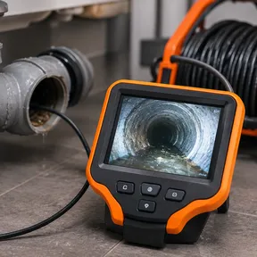
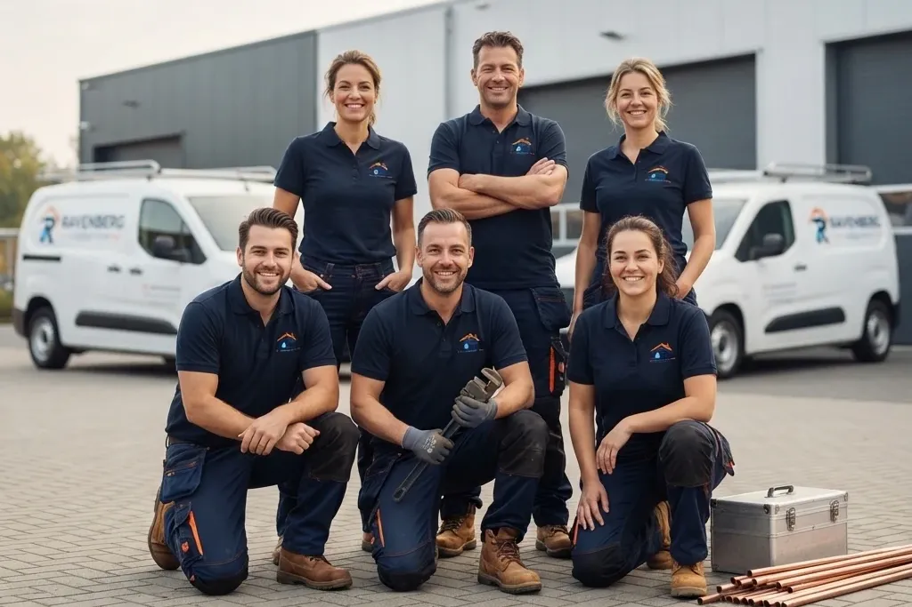

Lekkage, verstopping of storing? Wij lossen het op.
Ervaren loodgieters bij u in de buurt. Dag en nacht bereikbaar, en u weet vooraf wat het kost.
- 24/7bereikbaar
- Prijsvooraf bekend
- Ervarenloodgieters
- 24/7 spoedservice
- Vakkundig en betrouwbaar
- Duidelijke tarieven
- Netjes werken
Onze diensten
Van spoedreparatie tot nieuwe installatie. Kies uw probleem voor uitleg en tarieven.
- LekkageLek vinden en repareren
 VerstoppingToilet, gootsteen, douche en afvoer
VerstoppingToilet, gootsteen, douche en afvoer
RioleringOntstoppen, camera-inspectie, herstel- Cv-ketelStoring, onderhoud en vervanging
- Kranen en sanitairRepareren, vervangen en plaatsen
- LekdetectieLek opsporen zonder onnodig breekwerk
Cv-ketel onderhoud?
- Voorkom storingen in de winter
- Langere levensduur van uw ketel
- Zuiniger stoken

Vakmensen, geen tussenpersonen
Bij Ravenberg komt er een eigen loodgieter bij u langs. Iemand die het werk kent, eerlijk zegt wat er aan de hand is en het in één keer goed doet.
- Eigen loodgieters in vaste dienst
- Goed gevulde bus, vaak in één bezoek klaar
- Werkbon en foto's voor uw verzekering
Zo werken we
U belt of vraagt een offerte aan
U krijgt meteen iemand aan de lijn die weet waar hij het over heeft.
U hoort vooraf wat het kost
De loodgieter bekijkt het probleem en noemt de prijs voordat hij begint.
Opgelost en opgeruimd
We testen of alles werkt en laten de ruimte netjes achter.
Tarieven
Duidelijke prijzen. Bij grotere klussen krijgt u vooraf een vaste prijs.
- Voorrijkosten
- € ..
- Uurtarief
- € ..
- Toeslag avond, nacht en weekend
- € ..
Alle bedragen incl. btw. De echte tarieven vullen we in met Ravenberg.
Wat klanten zeggen
Echte reviews, rechtstreeks van Google.
Hier komt een echte Google-review, letterlijk zoals de klant hem schreef.
Hier komt een echte Google-review, letterlijk zoals de klant hem schreef.
Hier komt een echte Google-review, letterlijk zoals de klant hem schreef.
Werkgebied
We werken in heel Nederland. Kies uw plaats voor het lokale nummer en informatie over uw regio.
Veelgestelde vragen
Hoe snel kan er een loodgieter komen?
Bij spoed proberen we zo snel mogelijk langs te komen. Hoe snel precies hangt af van waar u woont en hoe druk het is. Dat hoort u meteen aan de telefoon.
Wat moet ik doen bij een lekkage?
Draai de hoofdkraan dicht. Die zit meestal bij de watermeter. Komt er water bij stopcontacten of lampen, zet dan ook die groep in de meterkast uit. Bel ons daarna.
Weet ik vooraf wat het kost?
Ja. De loodgieter noemt de prijs voordat hij begint. Bij grotere klussen krijgt u een vaste prijs.
Vergoedt mijn verzekering de schade?
Dat hangt af van uw polis. Wij leveren een werkbon met foto’s, zodat u de schade makkelijk kunt melden.